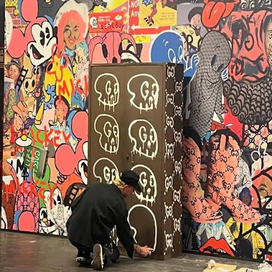
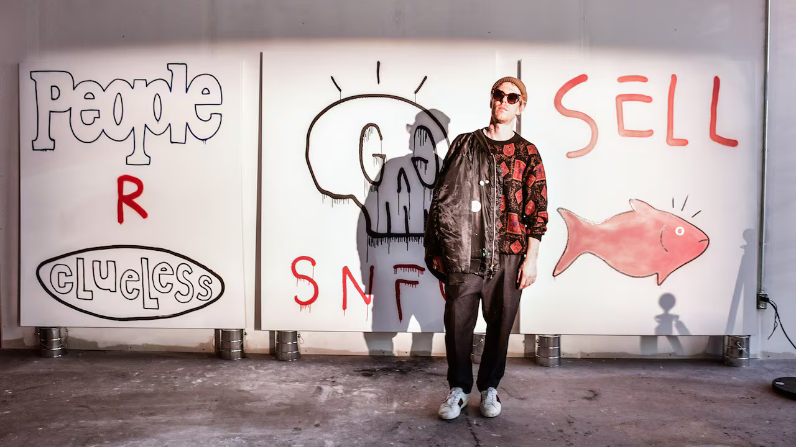
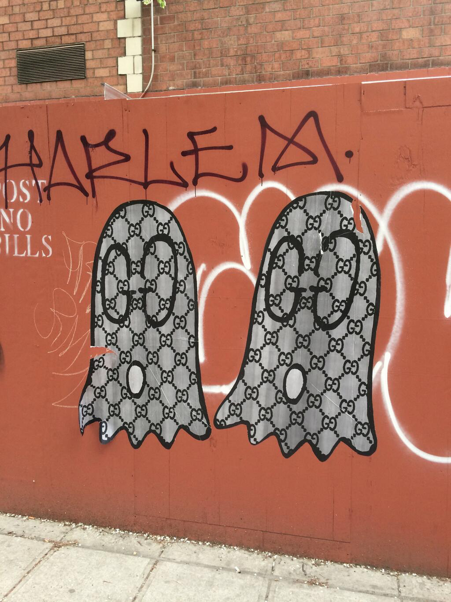
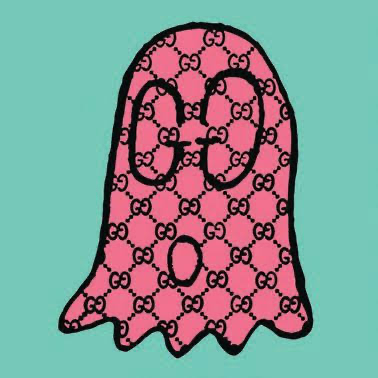

Призрак в доме Gucci: как Тревор Эндрю превратил бутлег в язык, на котором разговаривают с брендами
В 2012 году Тревор Эндрю, бывший олимпийский сноубордист и музыкант из Новой Шотландии, вернулся с гастролей на Филиппинах. На местном рынке он купил отрез контрафактной ткани с монограммой Gucci — такую же, какую в юности искал на нью-йоркском Canal Street. Через два дня был Хэллоуин, костюма не было, и Эндрю просто вырезал в ткани прорези для глаз, вскочил на скейтборд и покатил по Lower East Side. Прохожие сами начали кричать ему вслед: «Gucci Ghost!» — хотя «это ещё не было вещью, но люди сразу считались с ней».
Так родился персонаж, который через три года сделает то, что казалось невозможным: не получил иск от Gucci, а получил приглашение в Рим. И история того, как именно Эндрю строит коллаборации с брендами, — это по сути учебник по современной культуре лицензирований: от уличного граффити до цифровых пространств.


Метод: «делать это, пока они не засудят или не наймут»
Ключ к феномену GucciGhost — в том, что Эндрю никогда не позиционировал себя как пират. «Я не был бутлегером, я был тем, кто переосмысляет». Его собственная формула раннего периода звучит как манифест: «Чёрт, я просто буду делать это, пока они не засудят меня или не наймут».
И это важно для понимания его метода работы с брендами: он никогда не приходит с пустыми руками и презентацией «а давайте сделаем круто». Он приходит с готовым языком, уже проверенным на городе. Три года Эндрю развивал GucciGhost как мультимедийный проект — рисовал привидение с глазами из логотипа на всём, что попадалось под руку: на найденных на улице вещах, мусорных пакетах, куртках. Вмешательство знакомого фотографа Ари Маркопулоса, который показал работы Алессандро Микеле, перевернуло всё: «Мне позвонили из Gucci и сказали: „Эй, мы хотим с тобой сотрудничать. Ты можешь прилететь в Рим на следующей неделе?“»


Показательна деталь: на первую встречу он привёз два больших чемодана — холсты, самодельные куртки, бумажные пакеты, эскизы. И примерно 75% всего, что он сделал до Gucci, в итоге вошло в первую официальную коллекцию. Эндрю не адаптировался под бренд — бренд интегрировал уже существующий артистический архив.
Эстетика: снять жёсткость и совершенство


Что именно Эндрю приносит брендам? Сам он описывает это так: он нашёл способ переосмыслить логотип и сделать его своим, «создавая новый смысл и контекст, убирая жёсткость и совершенство, добавляя что-то несовершенно-совершенное».
Работая с тем, что было под рукой — найденными вещами, бутлеговой тканью, — он выстроил эстетику, которую сам описал в интервью 10 Magazine как «более сырой, уличный вайб, который действительно трансформировался в этот гибридный люкс». Капающая краска, размазанные двойные G, мультяшное привидение — это не украшение продукта, это деконструкция целостности бренда. Критики отмечают в его подходе ворхолианский механизм: работа «исследует наши отношения с потребительской культурой, искривляя восприятие того, что „настоящее“, а что — люкс».
При этом корни этой эстетики — не в моде, а в субкультурах: скейт, панк, золотой век комиксов и мультфильмов. «Моё искусство исследует коммерцию, присваивая бренд, разбирая иконические образы и логотипы, оголяя их и представляя в сыром виде», — говорит Эндрю на своём сайте. Вдохновение он прямо связывает с Дэппером Дэном — гарлемским портным, который в 80-х «пиратил» люкс для хип-хопа: «Вот это в Гуччи мне и откликнулось. Это была не Gucci Gucci».
Медиумы: от стены в Бруклине
до блокчейна


Если выделить, как именно Эндрю выстраивает отношения с брендами, получится четыре принципа.
Первый — приходить с архивом, а не с идеей. Второй — требовать и давать свободу: он называет идеальный сценарий коллаборации ситуацией, когда находишь тех, кто верит в тебя и «даёт свободные поводья делать то, что я делаю». Третий — доверие вместо брифов: процесс с Микеле строился как итеративная игра — «я рисовал внизу в своём пространстве, приносил наверх, Алессандро смотрел, делал лучше, я возвращался обратно».
И четвёртый, может, самый честный: он никогда не притворяется, что бренд — не про деньги и масштаб. Ещё в 15 лет он делал продукты со сноубордическими брендами и с тех пор «всегда был втянут в дизайн и коллаборации — особенно когда у кого-то есть инфраструктура, чтобы воплотить твои самые безумные мечты». О своих мотивах в начале пути он говорит прямо: «Я использовал их как сосуд, чтобы вытащить своё искусство на поверхность. Тогда я сделал бы это бесплатно».
Эпилог
В 2023 году, спустя десять лет, Эндрю «отставил» GucciGhost — но не как конец, а как завершение проекта: книга, цифровая студия, выставочный зал-привидение. Его путь задал новый шаблон индустрии: артист может не просить разрешения у бренда, а сначала построить вокруг него собственный язык — на улице, на найденной вещи, в цифровом пространстве, — а потом позволить дому люкса говорить на нём. Или, как сама формула из его татуировок, «it was all a dream» — мечта, в которую он, по его словам, просто верил достаточно долго, чтобы она сбылась.
Читайте также: